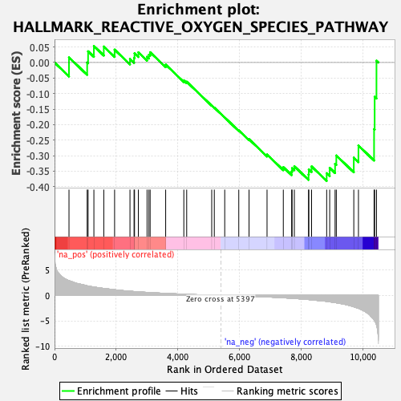
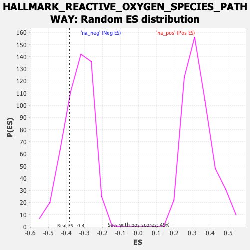

| Dataset | qlf.KOd4vsWTd4_gsea_score |
| Phenotype | NoPhenotypeAvailable |
| Upregulated in class | na_neg |
| GeneSet | HALLMARK_REACTIVE_OXYGEN_SPECIES_PATHWAY |
| Enrichment Score (ES) | -0.3813235 |
| Normalized Enrichment Score (NES) | -1.1379392 |
| Nominal p-value | 0.26482213 |
| FDR q-value | 0.34934917 |
| FWER p-Value | 0.996 |

| SYMBOL | RANK IN GENE LIST | RANK METRIC SCORE | RUNNING ES | CORE ENRICHMENT | |
|---|---|---|---|---|---|
| 1 | SOD2 | 469 | 2.908 | 0.0165 | No |
| 2 | TXNRD2 | 1059 | 1.889 | 0.0000 | No |
| 3 | PRDX6 | 1089 | 1.845 | 0.0361 | No |
| 4 | NDUFB4 | 1277 | 1.653 | 0.0531 | No |
| 5 | PRDX2 | 1598 | 1.375 | 0.0515 | No |
| 6 | ABCC1 | 1949 | 1.115 | 0.0415 | No |
| 7 | PRNP | 2448 | 0.833 | 0.0115 | No |
| 8 | SOD1 | 2580 | 0.764 | 0.0151 | No |
| 9 | ERCC2 | 2596 | 0.759 | 0.0297 | No |
| 10 | TXNRD1 | 2720 | 0.708 | 0.0328 | No |
| 11 | PRDX1 | 3002 | 0.594 | 0.0185 | No |
| 12 | SCAF4 | 3062 | 0.575 | 0.0250 | No |
| 13 | NDUFA6 | 3102 | 0.559 | 0.0331 | No |
| 14 | HMOX2 | 3606 | 0.397 | -0.0066 | No |
| 15 | PRDX4 | 4195 | 0.243 | -0.0576 | No |
| 16 | GLRX2 | 4288 | 0.220 | -0.0618 | No |
| 17 | LAMTOR5 | 5100 | 0.051 | -0.1382 | No |
| 18 | PFKP | 5184 | 0.038 | -0.1453 | No |
| 19 | GSR | 5522 | -0.019 | -0.1771 | No |
| 20 | NDUFS2 | 5978 | -0.093 | -0.2186 | No |
| 21 | CAT | 6311 | -0.157 | -0.2470 | No |
| 22 | MBP | 6895 | -0.300 | -0.2963 | No |
| 23 | GPX4 | 7423 | -0.460 | -0.3370 | No |
| 24 | ATOX1 | 7694 | -0.569 | -0.3508 | No |
| 25 | GCLM | 7708 | -0.574 | -0.3399 | No |
| 26 | GCLC | 7781 | -0.606 | -0.3340 | No |
| 27 | IPCEF1 | 8242 | -0.813 | -0.3608 | Yes |
| 28 | NQO1 | 8250 | -0.818 | -0.3443 | Yes |
| 29 | JUNB | 8340 | -0.862 | -0.3346 | Yes |
| 30 | STK25 | 8830 | -1.180 | -0.3565 | Yes |
| 31 | GLRX | 8928 | -1.256 | -0.3393 | Yes |
| 32 | OXSR1 | 9103 | -1.408 | -0.3262 | Yes |
| 33 | MSRA | 9143 | -1.447 | -0.2995 | Yes |
| 34 | EGLN2 | 9710 | -2.236 | -0.3064 | Yes |
| 35 | PDLIM1 | 9861 | -2.538 | -0.2673 | Yes |
| 36 | LSP1 | 10368 | -4.813 | -0.2142 | Yes |
| 37 | SBNO2 | 10387 | -5.016 | -0.1103 | Yes |
| 38 | CDKN2D | 10446 | -5.780 | 0.0059 | Yes |
